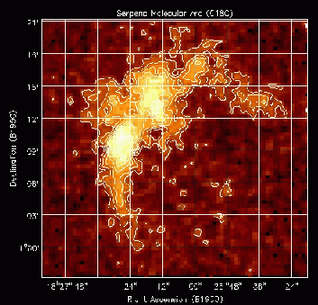
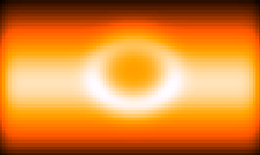

Main
Newsletter
Index
Science
Articles:
CO in
Serpens
AIPS++ in
the RET
Program
Multi-Scale
Clean for
Extended
Structure
A Layman's
Experience
of Glish/AIPS++
|
CO in Serpens
Joseph McMullin - NRAO/Charlottesville

Figure S1: [Click on figure for higher resolution.]
Image of integrated C18O J=1-0 emission in Serpens.
The image shown is the nearby (distance=220 pc) stellar factory in Serpens as
seen in its integrated C18O J=1-0 emission, as observed by the NRAO 12-meter
telescope. This molecule traces the overall column density structure in the
region. The backbone of the cloud is an arc curving through roughly 180 degrees,
with a length of 30'. Two main peaks in the C18O emission are located near the
center of the arc, separated by 4'. The Submillimeter and far infrared
continuum emission from the region are dominated by sources that lie primarily
*between* the two C18O peaks, including a cluster of 50-140 young stars.
A first moment map of the C18O emission displays a broad velocity gradient
running from a velocity centroid of 9.0 km/s at the northwest end to 7.5 km/s
at the southeast end. It is unclear whether this gradient arises from rotation,
two clouds at different velocities or interaction of cloud
material with recent star formation.
In the paper on this source published earlier this year (McMullin et al. 2000,
Ap. J., 536, 845), five different software packages were used to examine the
array of data: 1) AIPS for reduction of NRAO 12-m OTF data, 2) CLASS and
3) COMB for analysis of single dish spectra from the CSO and NRAO 12-m,
4) MIRIAD for analysis of the BIMA interferometric data and 5) WIP for
fashioning the final, publication-quality figures. While the
calibration had been done, I threw in a sixth package, AIPS++, to explore
better, more streamlined avenues for reducing a diverse set of data,
which is typically the norm rather than the exception in observational
astronomy.
Overall, I was pleased with the capabilities of the images and viewer modules
in particular. It was gratifying to obtain the same answers as I had
measured in MIRIAD (which I'm quite fond of). In addition, I found these
tools better for exploring the data; interactively examining the structure
on both the large and small scales is one of the more versatile tools
handed to you in the AIPS++ GUI. The ability to script (or construct
a command line record of your sundry GUI button clicks) was also
a valuable addition for streamlining future reductions.
In general it was my experience that the basic toolkit has grown to house
quite an array of analysis tools, so it's more a question of finding the
name of the task you need than whether you can perform an operation.
I look forward to completing my next data set as the previous battery of
packages can now be replaced, from calibration->imaging->figure production,
with AIPS++.
|
Main
Newsletter
Index
Science
Articles:
CO in
Serpens
AIPS++ in
the RET
Program
Multi-Scale
Clean for
Extended
Structure
A Layman's
Experience
of Glish/AIPS++
|
Using AIPS++ in the
Research Experience for Teachers (RET) Program
Tim Spuck - Oil City Area Sr High School, Oil City, Pennsylvania
The HI luminosity-linewidth profile method is a valuable tool in radio
astronomy. Among other things, it helps astronomers determine
distances, rotation velocities, and hydrogen composition for distant
galaxies. During my summer Research Experience for Teachers (RET), I
worked with J. Richard Fisher at the National Radio Astronomy
Observatory in Green Bank. This past October, Dr. Fisher used the
Arecibo Radio Telescope to collect data for over 500 galaxies; my job
was to reduce this data. The data helps to support research completed
with the Infrared Astronomical Satellite and provide a comparison of
luminosity-linewidth and supernovae Ia distance scales. In order to
complete the task I had to first acquire a working knowledge of AIPS++
and Glish, the command and scripting language of AIPS++; Glish allows
users easy access to all AIPS++ analysis routines and provides a means
of writing customized applications by bundling together collections of
commands into new functions. This past summer, Dr. Fisher and I wrote
AIPS++ scripts that would implement data correction factors, display
data scans, and assist in making precise measurements.
As a volunteer researcher, I plan to continue my work with this
project during the coming school year. I will be installing AIPS++ on
a Linux machine at my school in Oil City, PA using the latest version
of AIPS++ on CD. Selected students will train and assist me in
completing the data reduction process for these galaxies. In any
science education program whether it be elementary school or college,
it is crucial that students be provided the opportunity to experience
science rather than to simply be told about it. If anything this
summer, I've become even more convinced that science is active, not
passive. Science is a vehicle by which man contributes to his
understanding of the universe around him. Thanks to my RET experience,
my students will be going on a little "drive" this year.
|
Main
Newsletter
Index
Science
Articles:
CO in
Serpens
AIPS++ in
the RET
Program
Multi-Scale
Clean for
Extended
Structure
A Layman's
Experience
of Glish/AIPS++
|
Backing into AIPS++ -- a Layman's Experience
F. J. Lockman - NRAO/Green Bank

Figure S3:
Model of an HI cloud seen against background emission. The cloud has
a cold core which appears in self-absorption and a hotter shell.
The model was convolved to simulate observation with the 140 Foot
Telescope.
Editor's note: This article traces the path of a non-programmer
astronomer learning how to program in AIPS++ at the Glish level in
order to perform customized scientific calculations. It frankly lays
out both the frustrations one might expect to encounter on this path
and the ease and power of Glish/AIPS++ programming once you have
learned how to use these tools. The bottom line is best summarized by
Jay's concluding remark: "I have found Glish/AIPS++ a major advance
over other software tools that I have used and recommend it to anyone
looking for a general purpose package for analysis of astronomical
data."
Some months ago while trying to model a large HI cloud seen in
21cm emission and self-absorption against the galactic HI background,
I was faced with the need to make some simple but rather extensive
calculations. At Green Bank, I am surrounded by people using glish
and developing AIPS++, so it was a natural temptation to play with
these new tools for what I thought would be just a few day's worth of
modelling. By the time the project was finished, months later, I had
written several large glish scripts, each with hundreds of lines of
code, and had analyzed several large spectral-line data sets using
glish/AIPS++ functions. The results will appear in a forthcoming
issue of the ApJ; here I have been asked to write about the experience
and what lessons might be offered to others who would use the AIPS++
system as a general computing tool. I must warn readers that I have a
very unclear understanding of how the tools I used fit into the
greater scheme of AIPS++ and likely much of what I think I understand
is incorrect. In particular, I will refer to glish and AIPS++ without
a clear distinction between them because that is how I used them. I
"backed into" AIPS++ by adopting a "bottom-up" approach, that is, by
using glish in a primitive way, and only incorporating AIPS++
functions where necessary. But perhaps the lesson is that this system
can be quite useful even if it is not understood at all.
I began the project in total ignorance of AIPS++ and glish, but armed
with Rick Fisher's excellent Note
Getting Started with Glish for AIPS++
and as important, with Rick himself just down the hall, within a short
time I was manipulating arrays in the effortless way that glish
encourages. In fact, if there is one major impression I have of
working in glish, its that most things are either effortless or
impossible. But more on this later. I was quite impressed on the
ease with which simple radiative transfer problems could be coded in
glish, and the results displayed using the built-in pgplot functions.
It was a short step to incorporating AIPS++ functions in the code,
creating AIPS++ images from arrays, convolving the images to mimic
observations with a radio telescope, and so on. A few months later
the results were in hand, and it had been a satisfactory experience.
I now find myself beginning a totally different project, again using
the Glish environment. It has become my default language for data
analysis and modeling.
Here are a few general impressions derived from this experience:
- Glish is compact and powerful. With its basic functionality it
is possible to do an enormous amount quite quickly. I was continually
impressed with how straightforward and logical it was to do more or
less exactly what I wanted. For example, given an array of spectral
line measurements in various directions, one might want to form a
smaller array of only the data with detections. It is simple in glish
to say detections:=positions[Peak_T>3.0*sigma] and get an array of,
well, of the good data! Rick Fisher's memo conveys this power quite
well. When programming in glish, the AIPS++ functions are easily
available and these make processes like convolution quite simple.
- The style of glish/AIPS++ is quite different from anything I had
experienced before, and perhaps because I lack any understanding of
the intellectual basis behind it, in places it seems somewhat weird.
But it is, for the most part, consistent, and I was gratified to
discover that once I learned a pattern it could be applied in many
different circumstances. This is to say that glish/AIPS++ has a
reasonably consistent set of rules.
- The online AIPS++ documentation is quite extensive though I found
it almost uniformly obscure. Luckily, it usually contains enough
examples to allow me to deduce the rules governing whatever function I
need while sparing me the necessity of learning any comp-sci
terminology.
- That glish is an interpreting language (rather than one which is
compiled) has both advantages and disadvantages. On the plus side, I
quickly developed the habit of trying out swatches of code in the
interactive environment, testing to make sure that each variable had
the correct value, then embedding the code into a function which
operated in a sort-of batch mode during actual use. For most of what
I did the loss of speed due to the continued interpretation of the
glish scripts was not significant -- it takes so much time simply to
get glish started on my workstation that I typically logged on to the
fastest machine available and worked entirely there. However, if my
programs get any more complex than the current ones, the speed of
glish will probably become a factor, and I may need to optimize the
run-time of certain small blocks of code.
- Errors: Whatever you do, don't make a mistake in Glish. It's
error-reporting is crude and often less than helpful. For example, if
you forget to supply all the parameters in a function call, it lists the
entire function as part of the error message. Also, an error which
involves an array can generate a number of error messages equal to the
length of the array. I am making this sound worse that it actually
is, for in a relatively short time I developed a bit of sense for
deducing the true error from the Glish spasm. Still, some errors can
still be maddeningly difficult to track down. Particularly insidious,
though, are errors which glish does not consider to be errors at all.
This is the topic of the next section.
Editor's note: Glish code checked into the system is pretty good
at handling errors. Because of Glish's flexible typing, a variable
which usually has an array in it might be set to a "fail" value if
an error was made, the is_fail() function can detect the
failure of the array, and the glish script can orchestrate an appropriate
response. More advanced user scripts should utilize this sort of error
checking as well. On the topic of Glish's habit of printing out lots of stuff,
this is often used as a "feature": for example, if you can't remember
the name of some function of the Table tool, just typing
the name of your Table tool will list all of the functions defined
for Table. Similarly, typing the tabletoolname.functionname() will show
you the parameters that function requires.
- Gotcha! Sometimes things didn't work out the way I expected, and
this was typically the largest source of wasted time in my experience
with glish. An example that I ran into just today occurred while I
was trying to integrate a number of spectra over some minimum to
maximum velocity, with the constraint that the minimum should be at
least 100 km/s . Given an array of minimum velocities I wrote
min_vel:=max(min_vel,100). Well, the variable min_vel goes into this
statement as an array but comes out as a scalar. This legerdemain is
actually discussed in the glish documentation, but unless you are the
person (I am told there is one) who reads all relevant documentation
before beginning to write code, you might feel, as I do, that this is
a fault rather than a virtue of the language.
- I/O. This can be quite clunky. You should see what I have had
to go through to read the ASCII text output of a spread sheet into
useful arrays in glish. It is my impression that glish is comfortable
only with string I/O, which is ok if all you pass is messages, but
less useful if data needs to come and go.
Editor's note: while ASCII I/O is not one of Glish's strong points,
the tablefromascii()
and toascii() Table functions are extremely useful for dealing
with ASCII data. For this path to be fruitful, the casual user will need
to learn how to manipulate AIPS++ Tables, but given the power of the Table
system, the good documentation, and the "cut, paste, and test" aspects of
Glish, this is not a great hurdle.
- Bug reporting: Everyone should have the experience of submitting
a formal bug report to the AIPS++ community, for it gives one the
impression of having pulled a cosmic fire alarm. Email messages fly
back and forth, progress reports appear, and I could not shake the
feeling that somewhere, deep under a mountain in Colorado, lights on a
gigantic panel had turned from green to red. Within a few days the
bug was reported to be fixed. This experience is one which I can
recommend quite highly.
If you are considering giving glish/AIPS++ a try, here are a few suggestions
that may ease your way:
If you are really stuck, give up. In my experience, if you
are having a problem it is a waste of time trying to understand
exactly what you are doing wrong in some particularly tricky piece of
code. My advice is to stop trying to debug. Rather, find a different
way to write the code, perhaps less elegantly, and see if that works.
You may be up against a hitherto unrealized feature of glish that
might stump the experts for days, or more likely, something discussed
in part of the Glish manual that you have not yet read.
Sometimes glish just needs to rest. Are you told that "no
graphics device has been selected" or that you have "too many active
plots"? Do you find a persistent, inexplicable, parse error when
trying to include a function you wrote? Sometimes Glish just needs
time off. Exit from Glish, count to ten, start it up again, and you
may find your code working like a charm.
Don't hesitate to call for help. One of the most important
features of Glish and AIPS++ is that NRAO is staffed with people who
really want to make this system work for astronomers. They are eager
and willing to help and you should take advantage of that.
It is easy to criticize, so I do not want to leave an unfavorable
impression of my experiences. Despite its current problems, many of
which are due no doubt to teething pains, I have found Glish/AIPS++ a
major advance over other software tools that I have used and recommend
it to anyone looking for a general purpose package for analysis of
astronomical data.
Mark Holdaway
|